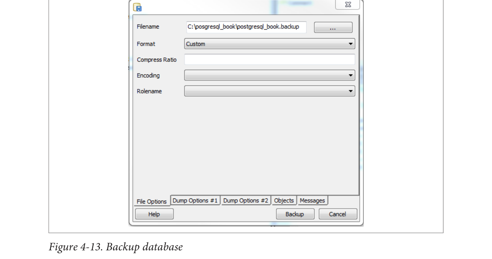

Sao lưu toàn bộ cơ sở dữ liệu
Trong “Sao lưu có chọn lọc bằng pg_dump” ở trang 38, chúng tôi đã trình bày cách sao lưu một cơ sở dữ liệu. Để lặp lại các bước tương tự bằng giao diện pgAdmin, nhấp chuột phải vào cơ sở dữ liệu bạn muốn sao lưu và chọn Tùy chỉnh cho định dạng, như được hiển thị trong Hình 4-13.

Sao lưu các đối tượng toàn hệ thống
pgAdmin cung cấp một giao diện đồ họa cho pg_dumpall để sao lưu các đối tượng hệ thống. Để sử dụng giao diện, trước tiên hãy kết nối với máy chủ mà bạn muốn sao lưu. Sau đó, từ menu trên cùng, chọn Công cụ→Sao lưu Toàn cầu.
pgAdmin không cho bạn kiểm soát đối tượng toàn cầu nào để sao lưu, như giao diện dòng lệnh. pgAdmin sao lưu tất cả các không gian bảng và vai trò.
Nếu bạn muốn sao lưu toàn bộ máy chủ, hãy thực hiện một pg_dumpall bằng cách vào menu trên cùng và chọn Công cụ→Sao lưu Máy chủ.
Sao lưu có chọn lọc các tài sản cơ sở dữ liệu
pgAdmin cung cấp một giao diện đồ họa cho pg_dump để sao lưu có chọn lọc. Nhấp chuột phải vào tài sản bạn muốn sao lưu và chọn Sao lưu (xem Hình 4-14). Bạn có thể sao lưu toàn bộ cơ sở dữ liệu, một lược đồ cụ thể, một bảng, hoặc bất kỳ thứ gì khác.
68|Chương 4: Sử dụng pgAdmin